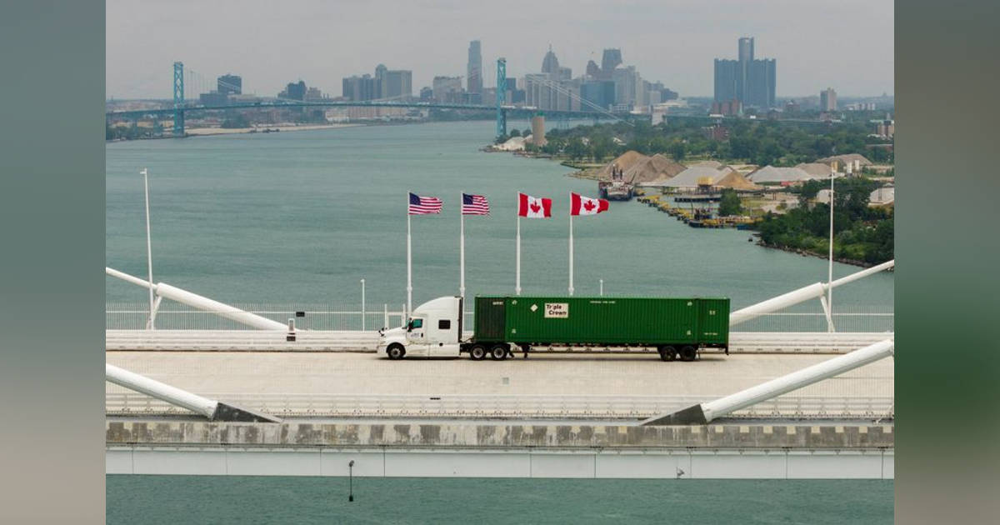

01
【保存版】酷暑に負けないカラダを作る「体温調整」の科学
発行日時：2026年8月22日 05:30 JST ・ NewsPicks編集部
あなたに関係ありそうな理由
暑さ対策を気温だけで判断せず、仕事・外出・運動を続ける条件を、湿度や活動量も含めて決める必要があるためです。
概要
猛暑の下で体がどう熱をため、どこで対策を誤りやすいかを、体温調整の仕組みから解説したNewsPicks編集部の記事です。暑さは気温だけで決まりません。湿度が高ければ汗が蒸発しにくく、日差しや路面からの放射熱も体への負荷になります。記事は、温度だけでなく湿度や輻射熱も加味するWBGTを見て、予定を決める必要があるとします。特にWBGTが31度以上では、すべての人が運動を中止すべき水準だと紹介されます。人は代謝で生じた熱を、皮膚の血流や発汗によって外へ逃がします。しかし周囲が高温になると熱を放出しにくくなり、湿度が高いと汗をかいても冷えません。体の中心部の温度が上がり続ければ、臓器に深刻な損傷が及ぶおそれがあります。記事は、日常生活で起きやすい古典的熱中症と、運動や労働で急に熱がこもる労作性熱中症を分けて考える視点も示します。熱が皮膚から自然に逃げやすい環境はおおむね28〜32度程度で、そこを超えるほど発汗や冷房、休憩に頼る比重が大きくなります。体の中心と皮膚の温度差を使って熱を逃がす仕組みが、外気、湿度、放射熱で同時に妨げられることを理解するのが出発点です。高齢者や子どもは特に注意が必要で、のどの渇きだけに任せないことが大切です。水を飲むことは必要ですが、水分だけで万能ではありません。食事、睡眠、暑さの中での活動量、休憩の取り方を合わせて考えるべきだと記事は説明します。暑熱順化も一度できれば終わりではなく、汗の量が増える効果だけに期待しすぎないほうがよいとされます。表示コメントでは、暑さを根性論で乗り切るのではなく、湿度とWBGTを行動基準にすること、子どもや高齢者を含めて早めに予定を変えることが論点になりました。仕事でも家庭でも、屋外作業や移動の開始前にWBGTを確認し、休憩、水分、涼しい場所への退避を先に組み込む。体調が悪くなってからの対処ではなく、熱をためない設計に変えることが記事の要点です。
仕事や会話で使える一言
猛暑日は、気温ではなくWBGTと活動量を基準に予定を変える。
NewsPicks原文を読む
02
【最新研究】AIと話せば話すほど人は「孤独」になるらしい
発行日時：2026年8月22日 05:30 JST ・ FORTUNE
あなたに関係ありそうな理由
生成AIを相談相手や伴走役として使うほど、便利さだけでなく、対面の関係や自分の気分にどう影響するかも点検する必要があるためです。
概要
個人向けチャットボットとの会話が、人の孤独感や対人行動にどのような変化をもたらすのかを扱ったFORTUNEの記事です。記事が紹介するCESifoの研究では、フランスの成人1万2365人を対象に、半数が28日間にわたって個人向けチャットボットと会話しました。その人たちは会話を楽しく、気楽だと感じる傾向を示した一方で、生活満足度の低下、抑うつ感や孤独感の小幅な上昇、ひとりで食事をする回数の増加、友人や家族と直接過ごす時間の減少も報告されました。気分よく話せるという主観と、生活上のつながりに現れた変化が同時に観測された点が、この研究の読みどころです。記事は、AIとの会話が気持ちを一時的に整えても、心配ごとを長く反すうさせたり、誰かに連絡したり外出したりするきっかけを減らしたりする可能性を研究者が見ていると伝えます。ただし、AIとの会話を一律に悪いものと断じる内容ではありません。ニューヨークで高齢者にチャットボットを使ってもらった別の取り組みでは、孤独感が下がった例も紹介されます。使う人の年齢、置かれた環境、会話の目的、既存の人間関係によって結果が変わる余地があるためです。大事なのは、会話の回数だけで効果を決めないことです。文字で返事を得ることと、表情、沈黙、共通の経験を伴う対面の関係は、同じ働きをするとは限りません。Gallupによれば世界では10億人が孤独を感じていると答えており、AIを補助的な接点に使いたい需要もあります。表示コメントでも、AIを心の「水道」のように頼れる存在にし得るという見方と、人間関係の代替ではなく補完にとどめるべきだという見方が並びました。使い方を考える際は、相談後に誰かとの現実の接点が増えているか、反対にひとりで抱え込む時間が増えていないかを観察することが重要です。
仕事や会話で使える一言
AIとの会話は便利でも、現実の人間関係を補完しているかを確かめる。
NewsPicks原文を読む
03
米、カナダ製品に50％追加関税 通商交渉が決裂
発行日時：2026年8月22日 13:49 JST ・ Reuters

あなたに関係ありそうな理由
関税は交渉相手だけでなく、輸入業者、調達先、消費者価格へ順に影響するため、北米の対立でも自社の供給網を分けて見る必要があるためです。
概要
米国とカナダの通商交渉が決裂し、米国がカナダ製品の一部に50％の追加関税を発動したと伝えるロイター記事です。対象額は約200億ドルで、カナダの対米輸出全体の5％強に当たるとされます。記事は、カナダ経済全体への影響は大きくない可能性がある一方、特定の産業では雇用や企業の存続に影響が出得ると説明します。カナダのカーニー首相は交渉終了を表明し、同じ水準で対抗すると述べました。米側は、カナダがすでに合意した内容を拒み、鉄鋼、アルミ、自動車、木材を巡ってさらに譲歩を求めたと主張しています。交渉案には鉄鋼・アルミ・自動車の関税引き下げや、カナダの店舗で米国産酒類を再び扱うことも含まれていたといいます。米国とカナダの間ではUSMCAを巡る幅広い協議も控えるため、個別の関税を巡る決裂が、次の通商協議の難しさにもつながり得ます。ここで重要なのは、関税率の数字だけで米国が相手国から50％を受け取る、と理解しないことです。表示コメントでは、実際の支払いは米国の輸入業者が担い、その後の価格転嫁を通じて消費者や企業に負担が及ぶという論点が出ました。また、米国の地域別のエネルギー需給とカナダ産の重質原油への依存、北米自由貿易協定USMCAの将来も懸念材料として挙げられています。報復措置は政治的な対称性だけでなく、双方の企業が代替しにくい品目をどう扱うかという実務の問題でもあります。カナダの報復が同程度にとどまるのか、対象品目がどう広がるのか、既存の供給契約や在庫にいつ反映されるのかは記事時点では定まっていません。今後は政治的な強い発言だけでなく、対象品目、発効日、輸入者のコスト、代替調達の可否を追う必要があります。北米で完成する製品でも、部材やエネルギーが国境を複数回越えるなら、影響は一つの関税表だけでは読めません。調達・販売に関わる人ほど、関税負担の主体と価格へ届く順番を分けて確認したいニュースです。
仕事や会話で使える一言
関税の影響は、税率ではなく、誰が払い、どの契約から価格へ移るかで見る。
NewsPicks原文を読む
04
トランプ米大統領、ベッセント財務長官に国債市場への介入指示せず
発行日時：2026年8月22日 06:04 JST ・ Bloomberg
あなたに関係ありそうな理由
市場に関わる発言は、施策そのものだけでなく、誰が決め、誰が責任を負うと語られるかによって信認へ影響し得るためです。
概要
トランプ米大統領が、ベッセント財務長官に国債市場への介入を指示したわけではないと述べたことを伝えるブルームバーグの記事です。大統領は記者団から指示の有無を問われ、「ベッセント氏が実施を望んだ」と答えました。同時に、ベッセント氏を非常に有能だと評価し、債券と金利について優れた天性の勘を持つとも語っています。記事が伝える事実はこの発言であり、どのような介入を想定していたのか、いつ誰が最終判断をしたのか、実際に何が行われたのかまでは書かれていません。記事は短報で、措置の規模、時期、対象、公式な判断文書も示していません。だからこそ、見出しを「介入が実施された」と読み替えず、発言、決定権限、実行の有無を切り分ける必要があります。国債市場は政策当局の説明や責任の所在への受け止め方を価格に織り込みやすいため、短い発言でも市場参加者が誰の判断として扱うかは軽くありません。大統領が評価した人物と、その人物に法的・制度的にどこまでの権限があるかも、同じ話ではありません。表示コメントでは、トランプ氏が成果は自らの判断として取り込み、結果が不透明な案件では周囲へ責任を移すという語り方をしているのではないか、という見方が示されました。一方で、それが責任転嫁なのか、本当にベッセント氏の主導だったのかは分からない、という留保も置かれています。コメントで強調されたのは、事実関係以上に、成果と責任を誰に帰属させる物語が政治や経営の評価を左右するという点です。ただし、その評価はコメント投稿者の解釈であり、記事本文が決定経緯を立証したものではありません。今後見るべきなのは、大統領の一言をめぐる評価ではなく、財務省や関係当局の公式説明、実際の市場対応、債券・金利の反応です。発言者の肩書と具体的な権限を混同せず、公式発表で裏づける姿勢が求められます。
仕事や会話で使える一言
市場の話では、発言・決定権限・実行を一つの事実にまとめない。
NewsPicks原文を読む
05
英裁判所、ヘンリー王子らに計954万ポンド支払い命令 プライバシー訴訟敗訴で
発行日時：2026年8月22日 01:08 JST ・ Reuters
あなたに関係ありそうな理由
訴訟では勝敗だけでなく、費用負担の算定方法と、判決が何を認定して何を認定しなかったかを分けて読む必要があるためです。
概要
英国高等法院が、ヘンリー王子、エルトン・ジョン氏らに対し、デイリー・メールの発行元へ計954万ポンド、約1300万ドルを支払うよう命じたと伝えるロイター記事です。原告側は7月、プライバシー侵害を巡る訴訟で敗訴しており、今回の命令は被告側の訴訟費用に関する中間的な支払いです。支払い期限は8月28日とされました。裁判所は、原告側の訴訟の進め方が不公正だったと判断し、被告側の費用を「indemnity basis」で負担させる判断を示しました。この方式では、被告側が費用の合理性や比例性を通常より厳密に示さなくてよい点が重要です。訴訟に負けた側が費用を負担する場合でも、どの範囲の費用をいつまでに払うかは、判決の種類によって異なります。この命令は被告側の負担を早期に回収させるための中間支払いであり、費用の全体像をその時点で固定するものではありません。ただし、954万ポンドがこの争いの最終的な費用総額として確定したわけではありません。総費用は当事者間の合意、または後の算定手続きに委ねられます。7月の判決では、原告側が主張した電話盗聴などの広範な違法行為は認められず、請求は退けられました。ここでも、裁判所が原告の請求を退けたことと、報道機関の過去の行為全般を積極的に認定したことは別です。表示コメントでは、原告側と被告側の総費用がさらに大きくなる可能性や、著名人のプライバシーと報道の自由がぶつかる難しさに目を向ける意見がありました。訴訟報道を読む際は、損害賠償なのか費用負担なのか、中間支払いなのか最終精算なのか、どの主張が審理されどの主張が退けられたのかを確認したいところです。大きな金額の見出しほど、支払いの法的性質と、後続手続きの有無を分けることで、判決の射程を誤らずに捉えられます。
仕事や会話で使える一言
訴訟の大きな金額は、損害賠償か費用負担か、最終額かを分けて読む。
NewsPicks原文を読む